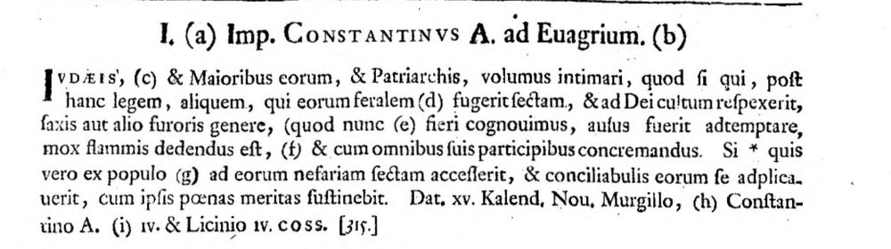
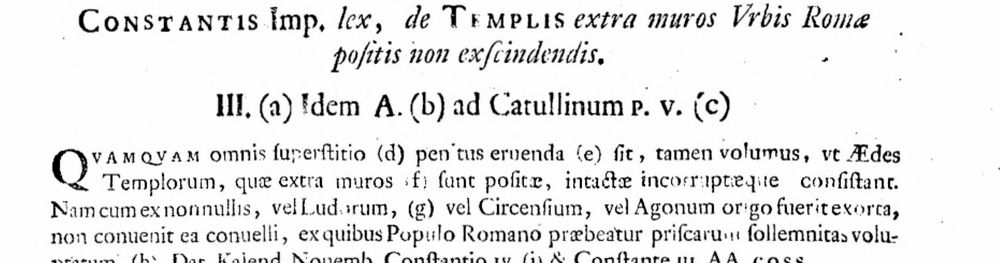

XVI.8.1: “Flammis dedendus … poenas meritas sustinebit” (315)
Latin: Leipzig 1743, vol. VI.1, p. 237, scan. Editors’ note letters omitted. Highlighted: Lecky’s quotation and the clauses he summarises.

The Emperor Constantine Augustus to Euagrius.
We wish it to be made known to the Jews, their elders and their patriarchs, that if any of them, after this law, dares to attack with stones or any other kind of fury (as we have learnt is now being done) anyone who has fled their deadly sect and turned to the worship of God, he is to be handed over to the flames at once and burnt together with all his accomplices. But if any one of the people joins their nefarious sect and attaches himself to their assemblies, he shall suffer the deserved penalties along with them. Given on the fifteenth day before the Kalends of November [18 October], at Murgillum, in the fourth consulship of Constantine Augustus and of Licinius [315].
Original Latin
I. Imp. Constantinus A. ad Euagrium.
Iudaeis, et maioribus eorum, et patriarchis, volumus intimari, quod si qui, post hanc legem, aliquem, qui eorum feralem fugerit sectam, et ad Dei cultum respexerit, saxis aut alio furoris genere (quod nunc fieri cognovimus) ausus fuerit adtemptare, mox flammis dedendus est, et cum omnibus suis participibus concremandus. Si quis vero ex populo ad eorum nefariam sectam accesserit, et conciliabulis eorum se adplicaverit, cum ipsis poenas meritas sustinebit. Dat. XV Kalend. Nov. Murgillo, Constantino A. IV et Licinio IV coss. [315.]
Gothofredus’s notes: the law is the third in the same title of Justinian’s Code; “of the people” means a Christian (note g, where he raises and rejects the reading “or a gentile?”); and Murgillum (note h) is “in Upper Pannonia, near Mursa”. In his commentary he sums up the law’s two heads: the punishment by fire of Jews who attack a convert, and the “deserved penalties” of “apostates”, Christians who go over to the Jews, which a later law of Constantius turned into confiscation of goods, as Lecky says. Lecky’s further statement in the same note, that “a Jew who married a Christian incurred the penalty of death”, is from a different law, not checked here.
XVI.10.3: the temples outside the walls, kept for the games (342)
Latin: Leipzig 1743, vol. VI.1, scan. Heading: “Constantis Imp. lex de templis extra muros Urbis Romae positis non exscindendis” (“Law of the Emperor Constans on not destroying the temples outside the walls of the City of Rome”). Highlighted: what Lecky reports.

3. The same Augustus to Catullinus, prefect of the City.
Although all superstition must be utterly rooted out, nevertheless we will that the buildings of the temples that stand outside the walls shall remain untouched and undamaged. For since the origin of some of the games, or of the circus races, or of the contests, arose from some of them, it is not fitting that those places should be pulled down from which the Roman people is provided with the solemn celebration of its ancient pleasures. Given on the Kalends of November [1 November], in the fourth consulship of Constantius and the third of Constans, Augusti [342].
Original Latin
III. Idem A. ad Catullinum p. v.
Quamquam omnis superstitio penitus eruenda sit, tamen volumus, ut aedes templorum, quae extra muros sunt positae, intactae incorruptaeque consistant. Nam cum ex nonnullis vel ludorum vel circensium vel agonum origo fuerit exorta, non convenit ea convelli, ex quibus populo Romano praebeatur priscarum sollemnitas voluptatum. Dat. Kalend. Novemb. Constantio IV et Constante III AA. coss.
Gothofredus’s notes correct the heading of the law: it should read “Constantius and Constans”, and the law belongs to Constans, who ruled Rome; “the City” is Rome; and the year is 342, when Catullinus was prefect of the City, not 346 as Baronius had it (notes b, c, f, i). He adds that ludorum means the stage shows, and voluptatum is “the proper word for games” (notes g, h).
Further down the rabbit hole
Sources that Lecky cites in the notes next to the ones that cite this page.
- Milman, The History of ChristianityDid Constantine ban the pagan sacrifices? A dean weighs Eusebius against Constantine
- Bédarride, Les Juifs en France, en Italie et en EspagneWhen Christianity came to power, the Jews’ persecution began, and a Pope wrote that God does not rejoice in bloodshed
- Palmer, A Treatise on the Church of Christ“Whosoever is separated from the Catholic Church … will not have life”
- Zosimus, New History, Book IVThe emperor who refused to be high priest, and the pagan pun that followed
- Lebrun, Discours sur la comédieWhy actors were buried at night, without priest or prayer
- Socrates, Ecclesiastical HistoryThe monk who would not undress to cross a river, and the eighty priests burnt at sea


Backlinks
Every place in Rationalism in Europe that links to this page (generated automatically when the site is built).